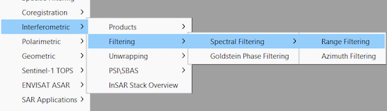
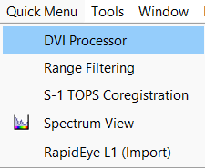

The quick menu can boost your daily work with SNAP. It provides quick access to the functions of SNAP you use most.
No need to fumble through the menu tree.

The quick menu is always at hand and centrally located in the menu.

It is inserted before the Tools menu. The list is sorted by the frequency of use. How many actions are listed is
configurable in the options.
Options
In the options you can configure the quick menu. You can set the number of actions to be displayed.